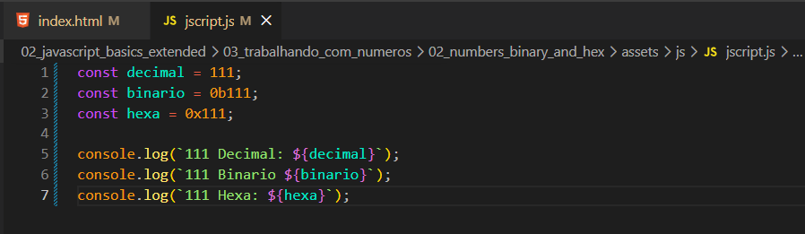
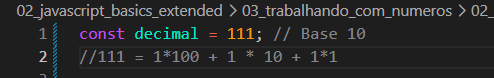
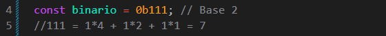
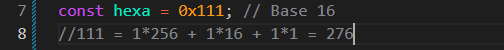
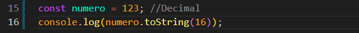

Numbers binary and hex
Intro
Iremos continuar entendendo melhor o sistema numerico.
Iremos continuar entendendo melhor o sistema numerico.
Iremos entender melhor como funciona o sistema numerico, exemplo usado:

Quando temos um 10 elevado a potencia ira ficar da seguinte forma comecando de tras para frente: 10*1 = 1(primeira dezena da direita), 10 elevado a potencia 1 = 10(segunda dezana da direita), 10 elevadi a potencia 2 é 100 = 1*100(primeira dezena), resultado 111.

Iremos continuar da mesma forma, da direita para a esquerda, se temos 2 elevado a potencia 0, ficando da seguinte forma: 1*1, 1*2, 2 elevado a potencia d 2 = 4, 1*4 = 7.

Novamente da direita para esquerda 111 = 1 elevado a potencia de 1 = 1*1; 16 elevado a potencia de 1 = 1*16; 1 elevado a 16 potencia de 2 = 1*256; 1*256 + 1*16 + 1*1 = 276

No JS temos maneiras de descobrirmos ou transformarmos de uma base para outra. Para isso usamos a palavra reservada toString(aqui podemos colocar a base). Ex: toString(2)
